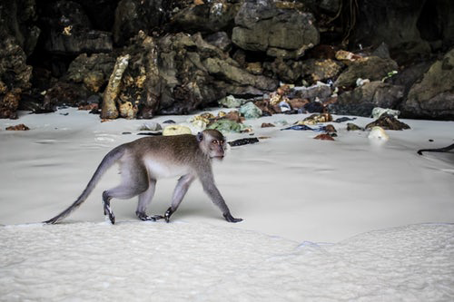
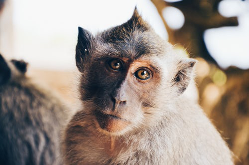
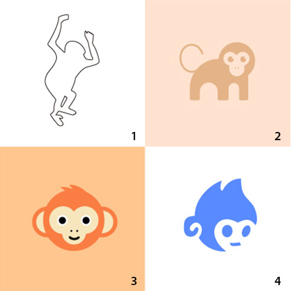
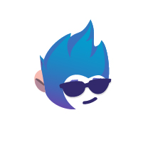
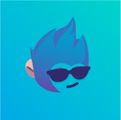
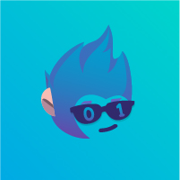
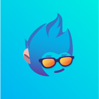
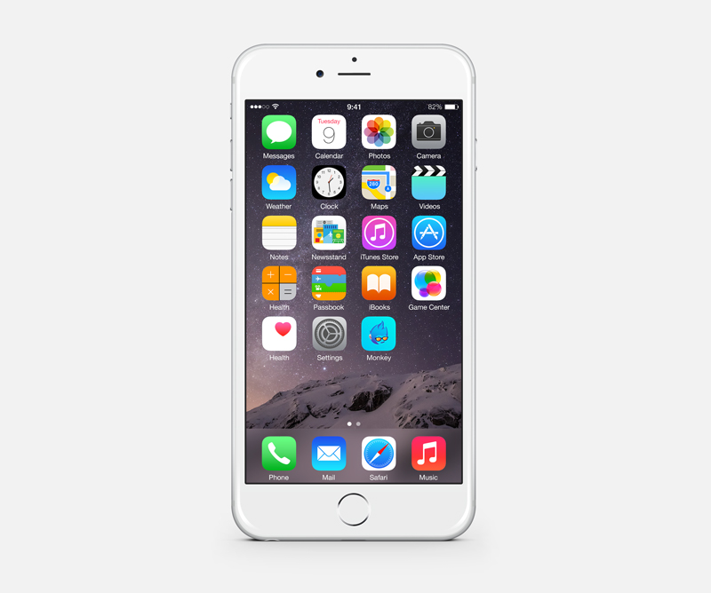

Monkey logo design
需求分析
需要做一个app的logo，这个app是管理SDK的app（小工具类app，整体内容偏简单），这个app希望传达出的是简单好用的感觉，所以其logo设计也需要做的“轻量化”。
在logo制作中，我在想有没有可能运用一些“软性”的相关元素：笔、眼睛、公文包、放大镜等，体现出其工具、管理特性。
整个logo我想营造一些比较轻松、活泼的感觉，以此塑造出这个使用过程的愉悦感。
造型思考
找了一些图片，发现猴子的主要特征一是整体造型：那种弯曲的造型，尾巴翘的特别高；二是脸部特征：我们常说的尖嘴猴腮。故从以下两个层面开始思考。
全身造型
全身造型固然可以做出很多花样，但是考虑到logo的使用场景：手机端的app，它的尺寸较小，如果显示整个身体的话，细节一定看不清，那么我可能会用一个线去勾勒它的外形，此为logo想法1。

局部造型
猴子的脸部造型特征较为明显：1
2
3
4椭圆形的脸
毛绒绒的毛发质感
耳朵较大
眼睛+鼻子+嘴占据整个脸部面积较大
所以，可以按照摄影图片，在设计软件中进行猴子的脸部绘制，需要注意的是，它不需要特别写实，一个简单的造型即可。

脸部的绘制的角度有两个：正面/正侧面，都可以进行尝试。
至于颜色，可以使用清新一些的亮色进行搭配，甚至黑白的纯粹亦可,此为logo想法2。
设计绘制
刚开始做了四个版本，前两个是“全身造型”，后两个是“面部特征”。

通过比较，觉得使用面部特征更好，故从面部特征开始优化：因为造型看着比较幼稚，所以对其进行加工,此处参考了dribbble上的渐变风格。

加上背景颜色之后，觉得眼镜处可以进行做些花样，于是便想到了户外的自行车炫酷的墨镜，于是找来图片进行配色。

似乎有些平淡，加上文字尝试？换一种眼镜造型尝试？

忽然想到，齐天大圣可以有火眼金睛，正好寓意了“助能用户快速找到自己的SDK”，于是加上了橙黄色的渐变。

最后进入PS进行颜色的颜色的微调，使其不至于太沉闷。
放入实际界面中观察，效果还不错。

至此得Monkey的图片一枚，客户表示满意。